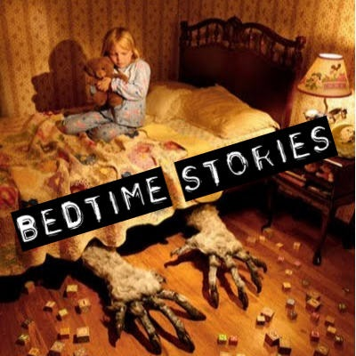
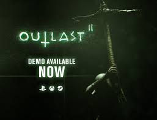
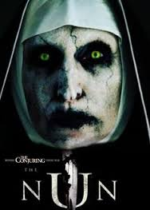
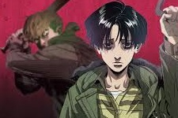
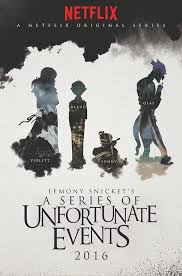
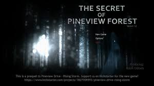

Creepy Things Around You
Scary Short Bedtime Stories for Kids
 Scary stories do not need to be long and drawn out. Kids have short attention spans and our collection of short, scary stories for kids considers this fact and provides a good scare in a short amount of time.10 Black & White Horror Movies That Are Still Very Scary
Fear is the most basic instinct that lies within every human being, ready to fight for survival should it be triggered by a book, video game, or a filmRings Trailer #2 Uncovers a Terrifying Secret
Yesterday, the producer just announced the new second trailer of the upcoming movies. Watch the trailer exclussively here.Download Demo: Outlast 2
 Check out some updates from the developer about this year sequel.Gloomy Sunday: Scary Suicidal Song from Hungarian.
Dare yourself to listen to the most unfamous suicidal song ever.Year of fear: Horror movies to look forward to in 2017
Think 2016 was scary? Fright flicks due this year feature Annabelle the creepy doll, and The Nun is back!This Early Year Fenomenal Webcomic
 This year is just began but Stalking Killing is taking it's popularity real quick because of its thrill.Bizzare New Series from Netflix
 Thirteen years later (an appropriate number), A Series Of Unfortunate Events makes a smooth transition to Netflix, with help from Handler and executive producer Barry Sonnenfeld, both of whom were involved (and then not involved) with the movie version.New Horror Indie Games: The Secret of Pineview Forest.
 The Secret of Pineview Forest is a free prequel to Pineview Drive - Rising Storm. Behind the abandoned house on Pineview Drive lies ominous Pineview Forest. The dark, foreboding forest trail leading directly to the Pineview property must be explored – but your every move and reaction is being watched.Books That Will Scared And Scarred Your Life
 There is nothing better than a good ghost story. It might be tempting to pop in one of your scarier movies when you want to get into the Halloween spirit, but there are plenty of novels sure to keep you up for just as many nights.
There is nothing better than a good ghost story. It might be tempting to pop in one of your scarier movies when you want to get into the Halloween spirit, but there are plenty of novels sure to keep you up for just as many nights.